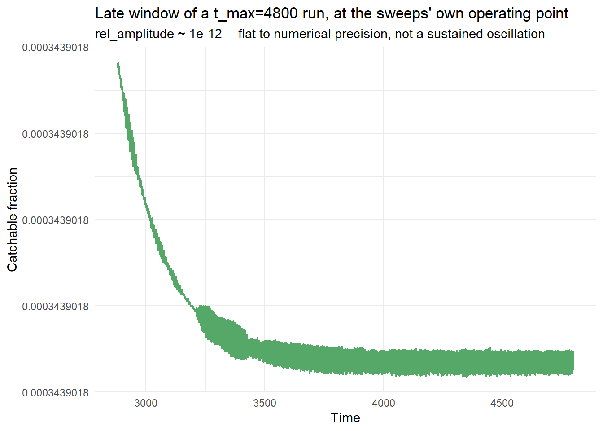
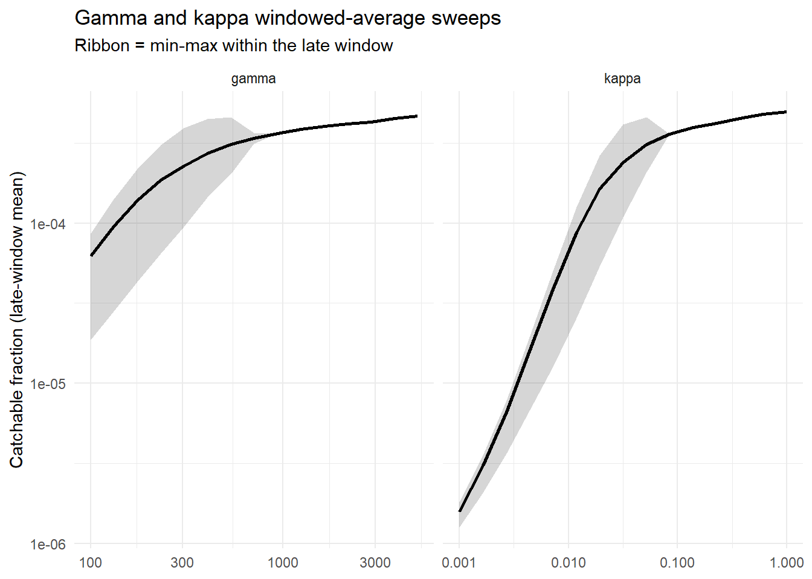
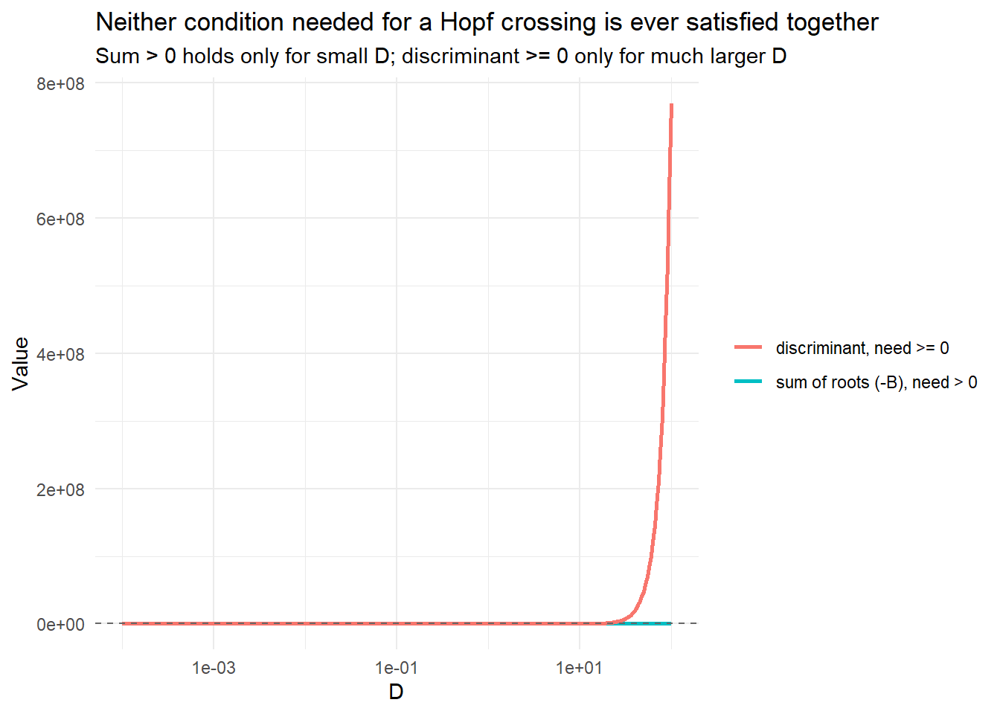
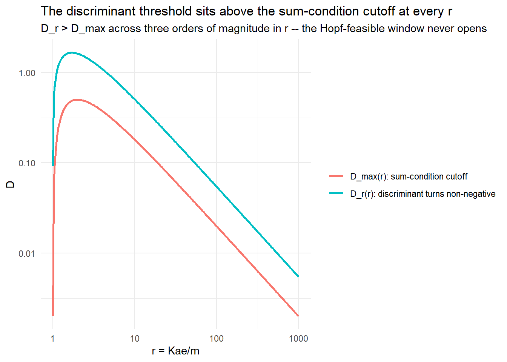

Day 27: Day 26’s P-Delay Threshold Was Wrong, and a Fourth Delay Placement That’s Always Possible
research
mizer
time-delay
hopf-bifurcation
predator-prey
correction
blog
Day 26’s ‘genuine threshold D < 0.144’ for the P-only-delay variant was wrong – it checked only that the quadratic’s roots sum to something positive, not that they’re real; the discriminant never overlaps the sum condition, so this placement can’t produce a Hopf bifurcation for any parameters. A fourth delay placement – N(t-tau) in the predator’s intake term – completes the delay-placement space: nondimensionalising collapses it to two ratios (delta = D/m, kappa = aP*/m), giving a Hopf crossing that always exists with a closed-form critical delay, confirmed by simulation and eigenvalue tracking.
Author
Samia
Published
July 14, 2026
Where Day 26 Left Us
Day 26 worked out three delay placements in the toy predator-prey system: delaying the predator’s conversion of intake into growth is structurally impossible; delaying the prey’s own self-limitation genuinely produces a Hopf bifurcation (onset near \(\tau \approx 2.4\)); and a third variant – delaying only \(P(t-\tau)\) inside the predator’s intake term, leaving \(N(t)\) instantaneous – was reported as conditional: “a genuine threshold on D”, \(D < 2amC/(1+aC)^2 \approx 0.144\).
That third verdict was wrong. This post works out why, and fixes it. First, though, two loose ends queued at the end of Day 26 finished running yesterday and are worth closing out before that.
Closing Day 26’s Last Loose End: Is the Operating Point Actually Oscillating?
Day 26’s gamma = 305.8 recheck found catchable_fraction flipping non-monotonically as t_run grew, which is not a shrinking dip (critical slowing down) and not a stable one (a real feature), but a reordering of all three rechecked points at t_run = 2400. The suspected cause: capacity_mult = 10, resource_decrease = 0.001 (the baseline every juvenile-pileup sweep has used since Day 24) might be gently oscillating rather than settled, with each single-snapshot read just sampling a different phase.
ggplot(late_window, aes(x = time, y = catchable_fraction)) +geom_line(color ="#55A868", linewidth =0.8) +labs(x ="Time", y ="Catchable fraction",title ="Late window of a t_max=4800 run, at the sweeps' own operating point",subtitle ="rel_amplitude ~ 1e-12 -- flat to numerical precision, not a sustained oscillation") +theme_minimal()

rel_amplitude comes back at flat to numerical precision. This operating point is not genuinely oscillating. Whatever drove the gamma=305.8 flip in Day 26, it isn’t a real limit cycle at the sweep’s own reference parameters.
The Windowed-Average Rerun of Gamma and Kappa
If it’s not a limit cycle, is it slow settling at specific sweep points instead? Rerunning gamma and kappa’s 15-point sweeps with a mean over the same late window, rather than a single final-timestep read:
bind_rows(gamma_windowed_df, kappa_windowed_df) %>%ggplot(aes(x = value, y = catchable_fraction_mean)) +geom_ribbon(aes(ymin = catchable_fraction_min, ymax = catchable_fraction_max), alpha =0.2) +geom_line(linewidth =1) +facet_wrap(~param, scales ="free_x") +scale_x_log10() +scale_y_log10(labels = scales::label_scientific()) +labs(x =NULL, y ="Catchable fraction (late-window mean)",title ="Gamma and kappa windowed-average sweeps",subtitle ="Ribbon = min-max within the late window") +theme_minimal()

Gamma’s windowed range (log10 ~ 0.87) comes in even smaller than Day 25’s single-snapshot value (1.3); kappa’s (log10 ~ 2.50) lands almost exactly on Day 25’s (2.6). Either way, windowing doesn’t inflate the ranges, if anything gamma’s shrinks, so this isn’t sampling noise papering over a bigger real effect. The within-window spread (max_rel_sd, ~40% for both) peaks at exactly gamma ~ 306 and kappa ~ 0.03 - the same low-parameter region Day 26’s gamma-dip check flagged, then collapses to numerical noise once gamma > 700 or kappa > 0.08. Combined with the flat operating-point time series above, that reads as a slow transient concentrated at the low end of each parameter’s range, not a genuine limit cycle: Day 25’s gamma and kappa conclusions survive.
alpha’s own windowed rerun is still outstanding. Its 27.5-order-of-magnitude range was never at risk from a noise floor this small, so it’s lower priority, but it should still be run for consistency with gamma and kappa’s footing.
The Tell: Extending tau Never Found an Onset
Locating the critical \(\tau\) for the P-only-delay variant at \(D=0.1\) (comfortably under Day 26’s 0.144 threshold) turned up nothing. Day 26 itself already found \(\tau=10\) still decaying; pushing \(\tau\) to 20, 40, 60, 100, and eventually 1000 (at \(t_{\max}=6000\)) never produced a sustained oscillation - the amplitude just kept decaying.
That’s the signature of a condition that was never satisfiable, not a critical delay simply further out than tested.
Re-Deriving the Full Condition
The characteristic equation for this variant (delay only inside the predator’s intake term):
Step 1: Substitute\(\lambda=i\omega\). A root can only cross from stable to unstable by passing through the imaginary axis, so any Hopf crossing must satisfy the characteristic equation at \(\lambda=i\omega\) for some real \(\omega>0\):
Step 4: Expand both sides into real and imaginary parts. The left side is immediate: \(|i\omega+\alpha| = \sqrt{\alpha^2+\omega^2}\). For the right side, multiply out the product first:
\[(i\omega+\alpha)(i\omega+m) = -\omega^2 + \alpha m + i\omega(\alpha+m)\]
so the right-hand quantity is \((\alpha m - \omega^2+\beta\gamma) + i\omega(\alpha+m)\), a complex number with modulus \(\sqrt{(\alpha m-\omega^2+\beta\gamma)^2 + \omega^2(\alpha+m)^2}\).
Step 5: Square both sides. Both sides of Step 3 are non-negative, so this is a legal move and it clears every square root:
Step 6: Write\(u=\omega^2\) and expand. Expanding \((\alpha m-\omega^2+\beta\gamma)^2 = u^2 - 2(\alpha m+\beta\gamma)u + (\alpha m+\beta\gamma)^2\) and gathering every term onto the right:
Step 7: Simplify the two coefficients. Since \((\alpha+m)^2-m^2=\alpha^2+2\alpha m\), the \(u\)-coefficient collapses to \(\alpha^2+2\alpha m-2\alpha m-2\beta\gamma=\alpha^2-2\beta\gamma\). The constant term expands to \((\alpha m)^2+2\alpha m\beta\gamma+(\beta\gamma)^2-m^2\alpha^2=\beta\gamma(2\alpha m+\beta\gamma)\). That leaves a real, single-variable equation in \(u=\omega^2\) - re-derived here from scratch by expanding the complex arithmetic directly, rather than by hand-matching real/imaginary parts the way Day 26 did - and it reproduces Day 26’s own quadratic exactly, which is a useful check that nothing was lost along the way:
Step 8: What a crossing needs. By Vieta’s formulas, the product of this quadratic’s two roots is \(\beta\gamma(2\alpha m+\beta\gamma)\), always positive since \(\alpha,\beta,\gamma,m>0\) by construction. A quadratic with real coefficients and a negative product of roots is guaranteed real roots automatically. Complex-conjugate roots always multiply to \(p^2+q^2\geq0\), so a negative product rules complex roots out on its own. That’s the shortcut Day 25 got to use for the conversion-delay variant, whose quadratic (\(u^2+\alpha^2u+\beta\gamma(2m\alpha-\beta\gamma)=0\)) has a product term that CAN go negative, so checking \(\beta\gamma>2m\alpha\) there was enough.
The P-only-delay variant’s product term is always positive, so its roots are either both real or a complex-conjugate pair, checking only the sum can’t tell those cases apart. That distinction needs the discriminant, which Day 26 never checked. Two conditions are needed together, not one:
Sum condition (Day 26’s condition): \(2\beta\gamma > \alpha^2\)
Discriminant condition (the missing piece): dividing \(\text{disc}=\alpha(\alpha^3-4\alpha\beta\gamma-8m\beta\gamma)\) through by \(\alpha>0\): \[\alpha^3 \geq 4\beta\gamma(\alpha+2m)\]
Substituting the Equilibrium Relation
Step 9: Substitute\(\beta\gamma=amP^*\). This falls straight out of the equilibrium relation \(eaN^*=m\): \(\beta\gamma=(aN^*)(eaP^*)=a(eaN^*)P^*=amP^*\). Both conditions become:
Both have to hold at once for a real, positive crossing frequency to exist and therefore for any \(\tau\) to produce a Hopf bifurcation.
Checking Both Conditions at D = 0.1
Code
check_hopf_feasibility_pdelay_full <-function(D, a =1, e =0.5, m =0.3, K =1) { N_star <- m / (e * a) C <- (K - N_star) / (a * N_star) P_star <- D * C alpha <- D * (1+ a * C) beta <- a * N_star gamma <- e * a * P_star bg <- beta * gamma B <- alpha^2-2* bg Cc <- bg * (2* alpha * m + bg) disc <- B^2-4* Ccdata.frame(D = D, alpha = alpha, beta = beta, gamma = gamma, beta_gamma = bg,B = B, Cc = Cc, disc = disc,sum_positive = (-B) >0, disc_nonneg = disc >=0,hopf_possible = (-B) >0& disc >=0)}check_hopf_feasibility_pdelay_full(D =0.1)
D alpha beta gamma beta_gamma B Cc disc
1 0.1 0.1666667 0.6 0.03333333 0.02 -0.01222222 0.0024 -0.009450617
sum_positive disc_nonneg hopf_possible
1 TRUE FALSE FALSE
The discriminant comes back negative (disc ~ -0.00945, disc_nonneg = FALSE) even though the sum condition holds (sum_positive = TRUE). No real \(\omega\) satisfies the crossing condition at \(D=0.1\), so no \(\tau\) can put a root on the imaginary axis, exactly what the tau-extension search showed empirically.
Scanning D across six orders of magnitude (1e-4 to 100), hopf_possible is FALSE at every point. The sum condition only holds for small D (below the 0.144 threshold), and the discriminant only turns non-negative for much larger D - the two windows never overlap.
Code
ggplot(pdelay_D_scan_df, aes(x = D)) +geom_line(aes(y =-B, color ="sum of roots (-B), need > 0"), linewidth =1) +geom_line(aes(y = disc, color ="discriminant, need >= 0"), linewidth =1) +geom_hline(yintercept =0, linetype ="dashed", color ="grey40") +scale_x_log10() +labs(x ="D", y ="Value", color =NULL,title ="Neither condition needed for a Hopf crossing is ever satisfied together",subtitle ="Sum > 0 holds only for small D; discriminant >= 0 only for much larger D") +theme_minimal()

Proving It’s Structural, Not Just These Numbers
Rescaling by m collapses the whole system to one dimensionless ratio, \(r = Kae/m\) (physically, \(r > 1\) is required for the equilibrium to exist at all, since N* < K needs K*a*e > m). In these units, the sum-condition cutoff and the point where the discriminant turns non-negative both become functions of r alone:
ggplot(structural_check_df, aes(x = r)) +geom_line(aes(y = D_max, color ="D_max(r): sum-condition cutoff"), linewidth =1) +geom_line(aes(y = D_r, color ="D_r(r): discriminant turns non-negative"), linewidth =1) +scale_x_log10() +scale_y_log10() +labs(x ="r = Kae/m", y ="D", color =NULL,title ="The discriminant threshold sits above the sum-condition cutoff at every r",subtitle ="D_r > D_max across three orders of magnitude in r -- the Hopf-feasible window never opens") +theme_minimal()

D_r sits above D_max at every value of r tested, from just above 1 out to 1000,which is not a coincidence of the scan: substituting D = D_max(r) into the discriminant and simplifying by hand (cross-checked symbolically) collapses to a single closed form:
Given the physical requirement \(s>m>0\), every factor here is strictly positive, so this is always strictly negative. At this project’s reference parameters (\(s=Kae=0.5\), \(m=0.3\)), it evaluates to \(-0.0199\), matching a direct plug-in at \(D=D_{\max}=0.144\) exactly.
Since \(\operatorname{disc}(D)\) is \(D^2\) times an upward-opening parabola in \(D\), negative at both \(D=0\) and \(D=D_{\max}\), it must stay negative for the entire interval between - exactly the range where the sum condition holds. So for every \(D>0\), at least one of the two necessary conditions always fails.
A Hopf bifurcation is structurally impossible for this delay placement, for any positive\(D,a,e,m,K\). Not “below a threshold”. Never.
A Fourth Delay Placement: N(t-tau) Inside the Intake Term
Three ways to place a single delay inside the intake product \(aNP\) have been tried so far: both \(N\) and \(P\) delayed together in the conversion term (Day 25, impossible), \(N\) delayed inside the prey’s self-limitation term (Day 26, possible), and \(P\) alone delayed inside the intake term (Day 26, corrected above to impossible). The remaining combination is the mirror image of that last one: delay \(N\) alone, leaving \(P(t)\) instantaneous:
Equilibrium is unchanged (\(N^*=m/(ea)\), \(P^*=D(K-N^*)/(aN^*)\)), and \(dN/dt\) is identical to every other variant, so \(dn/dt=-\alpha n(t)-\beta p(t)\) exactly as before, with \(\alpha=D+aP^*\), \(\beta=aN^*\).
The new structure is in \(dp/dt=eaN(t-\tau)P(t)-mP(t)\). Differentiating: the coefficient of \(n(t-\tau)\) is \(eaP^*=\gamma\) as always, but the coefficient of \(p(t)\) is \(eaN^*-m\), which is exactly zero - it cancels identically, since \(eaN^*=m\) is the equilibrium relation itself.
That cancellation is the interesting feature: the instantaneous growth-from-prey and death terms in \(dP/dt\) cancel exactly at equilibrium for any parameters, leaving no instantaneous \(p(t)\) term at all:
which correctly collapses to \(\lambda^2+\alpha\lambda+\beta\gamma=0\) at \(\tau=0\), matching the non-delayed result.
Nondimensionalising
Five physical parameters (\(D,a,e,m,K\)) plus a delay is a lot to carry through a Hopf analysis. Rescaling time by the predator’s own mortality rate \(m\) collapses this down: define dimensionless time \(s=mt\), delay \(T=m\tau\), frequency \(\Omega=\omega/m\), and two dimensionless groups:
\[\delta = \frac{D}{m} \ \text{(prey renewal, relative to predator mortality)}, \qquad \kappa = \frac{aP^*}{m} \ \text{(attack pressure, relative to mortality)}\]
Two identities fall out directly: \(\alpha/m=(D+aP^*)/m=\delta+\kappa\), and,using \(\beta\gamma=amP^*\) from the P-delay correction above \(\beta\gamma/m^2=aP^*/m=\kappa\). Substituting \(\lambda=m\Lambda\), \(\tau=T/m\) and dividing through by \(m^2\) gives:
Five dimensional parameters and a delay have become two dimensionless numbers (\(\delta,\kappa\)) and a dimensionless delay \(T\). Every physical parameter set with the same \((\delta,\kappa)\) behaves identically in dimensionless time.This was checked directly by picking a second, unrelated set of \(D,a,e,m,K\) engineered to share the same \(\delta\) and \(\kappa\) as the reference parameters, and confirming the dimensionless critical delay \(T_c\) comes out identical to five decimal places, while \(\tau_c=T_c/m\) differs only by the ratio of the two \(m\) values, as it should.
The Hopf Condition, in Dimensionless Form
Setting \(\Lambda=i\Omega\) and eliminating \(T\) the same way as every other variant gives a quadratic in \(U=\Omega^2\):
\[U^2 + (\delta+\kappa)^2 U - \kappa^2 = 0\]
The constant term, \(-\kappa^2\), is always negative whenever the equilibrium exists at all (\(\kappa=aP^*/m>0\) as soon as \(P^*>0\)) and a quadratic with a negative product of roots always has one real positive root automatically, the same shortcut that made the conversion-delay model’s condition a clean one-liner on Day 25. Nondimensionalising makes this visible directly: the “always possible” property doesn’t depend on \(\delta\) at all, only on \(\kappa\neq0\), which is guaranteed the instant a coexistence equilibrium exists.
Solving for the positive root and the phase condition for the smallest consistent delay gives closed forms entirely in \(\delta,\kappa\):
with dimensional quantities recovered as \(\omega=\Omega m\), \(\tau_c=T_c/m\). The transversality condition (\(\operatorname{Re}(d\lambda/d\tau)\) at the crossing) carries over unchanged in sign under this rescaling, since \(d\lambda/d\tau=m^2\,d\Lambda/dT\) and \(m^2>0\) was confirmed strictly positive at the reference parameters before trusting any of this.
At this project’s reference parameters (\(D=1,a=1,e=0.5,m=0.3,K=1\)): \(\delta=3.333\), \(\kappa=2.222\), giving \(\Omega\approx0.399\), \(T_c\approx3.757\), and converting back, \(\omega\approx0.1197\), \(\tau_c\approx12.525\) matching the dimensional derivation exactly.
Unlike the P-only variant, this one needs no threshold check: a genuine Hopf bifurcation exists for any positive\(D,a,e,m,K\), the same absolute character as the self-limitation-delay model, with its own onset delay rather than that model’s \(\tau\approx2.4\). 27_experiments.R has the simulation set up to confirm this onset empirically, bracketing \(\tau_c\approx12.5\) and checking for a genuine sustained limit cycle past it.
Confirming the Onset, and Why “Decaying” Below It Doesn’t Contradict a Hopf Bifurcation
A first sweep past tau_c showed no visible knee at 12.5, unlike the self-limitation model’s sharp onset. Rerunning tau=9, 10, 11 at increasing t_max resolves it: by t_max=6000, rel_amplitude_P for all three has collapsed to machine-precision zero (1.95e-14, 2.26e-14, 1.60e-12), confirming genuine transients rather than an earlier onset, while tau=15 holds steady at rel_amplitude_P ~ 2.9-2.97.
That leaves a real question: how can something decay to zero near a bifurcation that’s supposed to be about oscillation? Because it is oscillating the whole time - a decaying transient below a Hopf bifurcation is a damped spiral, not plain exponential decay. Tracking the dominant root of \(\lambda^2+\alpha\lambda+\beta\gamma e^{-\lambda\tau}=0\) confirms it: the root stays complex the whole way from \(\tau=\tau_c\) (where \(\lambda=i\omega\) exactly) down to \(\tau=9\), and its real part shrinks monotonically toward zero as \(\tau\to\tau_c\) (\(\operatorname{Re}(\lambda)=-0.0231\) at \(\tau=9\), \(-0.0076\) at \(\tau=11\), \(0\) at \(\tau_c\)), a stable spiral whose decay rate, \(|\operatorname{Re}(\lambda)|\), is exactly what “approaching a Hopf bifurcation” means. Past \(\tau_c\) that real part goes positive and nonlinearity caps the growth into the limit cycle seen at \(\tau=15\). (Between \(\tau=2\) and \(4\) the root also stops being complex altogether, turning the equilibrium into a plain overdamped node at small \(\tau\) - a separate, unrelated transition.)
How Far Can tau Go? min_N Doesn’t Fail Gently
Extending to tau up to 200, to check whether min_N eventually goes negative the way the self-limitation model’s did, and as gracefully: it never cleanly crosses into “modestly negative” (min_N = 0.00082 at tau=60, still 1.6e-17 ,vanishingly small but positive, at tau=200). Instead the simulation turns pathological before any tidy boundary: max_P swings between near-total predator collapse (7.1e-5 at tau=80) and explosive blowup (6.4e16 by tau=200) - amplitude growing without limit and dynamics turning erratic, not a bounded, readable limit cycle. That walks back last time’s read that this variant “self-limits more gracefully”: it just takes longer to break, and arguably breaks worse.
A Sweep-Design Mistake in Testing Period vs alpha and m
A first attempt at testing how oscillation period depends on alpha (via D) and m tested each value at 1.5 * tau_critical(parameter) – but tau_critical itself shifts with the swept parameter (11.48 to 12.97 across the D range, 12.09 to 34.81 across m), confounding each parameter’s own effect with how far past its own onset it was tested. Bad enough for the alpha sweep to flip the apparent trend: the closed-form period drifted down with alpha while the measured period drifted up, purely because larger D meant a larger tau_tested.
Fixed by testing every value at one shared, fixedtau per sweep, above that sweep’s largest tau_critical (tau=20 for alpha/D, tau=45 for m). The corrected sweep is in 27_experiments.R; results pending a fresh run.
The Corrected Picture
Four ways to place a single discrete delay in this predator-prey system have now been tried across Days 25-27:
Delay placement
Day 26 verdict
Corrected verdict
Predator’s conversion of intake into growth (N, P both delayed)
Impossible, any parameters
Unchanged
Prey’s own self-limitation (N(t-tau) in dN/dt)
Possible, confirmed by simulation
Unchanged, onset tau ~ 2.4
Predator’s intake term, P only (N(t) instantaneous)
“Genuine threshold D < 0.144”
Impossible, any parameters
Predator’s intake term, N only (P(t) instantaneous)
(not yet tried)
Possible, any parameters, onset tau_c ~ 12.5
The clean takeaway isn’t “two absolute, one conditional” as Day 26 had it. It’s two absolute-impossible, two absolute-possible, an even split. Where the delay sits changes the type of algebraic condition governing feasibility: the always-possible variants share a constant term in the \(u\)-quadratic that’s a bare negative square; the impossible ones have a constant term that’s a sum of positive pieces, easy to mistake for a threshold unless the discriminant is checked too.
What’s Next
With this knowledge, see whether the cod params actually cause there to be oscillations: now that all four delay placements have closed-form Hopf conditions, plug in the cod parameter set and check whether any of the feasible placements land past their own onset delay.
Rerun alpha’s isolation sweep: With the same windowed-average read, for consistency with gamma and kappa’s footing (not expected to change the qualitative threshold, just puts all three sweeps on the same footing).